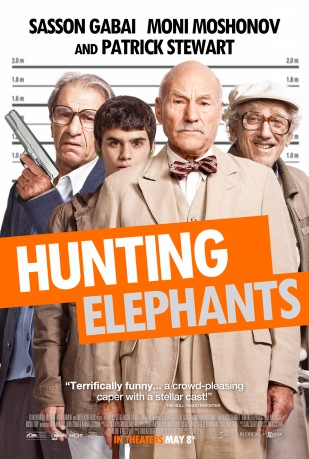

#6723 Die Unüblichen Verdächtigen
Alternativ: Hunting Elephants
 
 IMDB-Wertung: 6.4 / 10
IMDB-Wertung: 6.4 / 10  Metascore: 0
Metascore: 0 
Three elderly men and grandson Yonatan find themselves stuck together in a Jerusalem nursing home. The kid is a genius, but stammers and is bullied at school. Yonatan's grandfather, Eliahu, whom he had never met, is a former member of the Lehi (pre-State Jewish underground), and a cold person. Eliahu's best friend from Lehi, Nick, is full of ambition and passion that will never materialize; and Eliahu's English brother-in-law, a has-been, third-rate actor in debt for 232,000 euros. There's one thing keeping them together - they all want to rob the bank that employed Yonatan's deceased father to avenge it for not paying the Yonatan's mother compensation for his dad's death, due to the "small print" in his employment contract. And they want the money to make their last wish come true.
Jahr: 2013
Dauer: 107 Minuten
FSK: 12
Land: Israel Studio: EuroVideoTonspuren:
Untertitel:
Auflösung: 720p (1280x720) Größe: 2887 MB
Genre: Drama, Komödie, Krimi
Regisseur: Reshef Levi
Drehbuch: Reshef Levi
Soundtrack:
Darsteller:
 Sasson Gabai als Eliyahu
Sasson Gabai als Eliyahu Moni Moshonov als Nick
Moni Moshonov als Nick Patrick Stewart als Lord Michael Simpson
Patrick Stewart als Lord Michael Simpson- Yaël Abecassis als Dorit
- Moshe Ivgy als Deddy
- Zvika Hadar als Daniel
- Rotem Zissman-Cohen als Sigi
- Tikva Dayan als Parents' home manager
- Gil Blank als Yonatan
- Meirav Koperberg als Simona
- Alexander Peleg als Lesman
- Maria Belkin als
- Ezra Dagan als
- Rot Frhaci als
- Adam Gabay als Yoval
Datei: X:\2013(N-Z)\Unüblichen Verdächtigen, Die (2013, FSK12, 1280x720).mkv seit 09.08.2017
Festplatte: HD 2013(I-Z)-2014(A-Z)
 Es gibt insgesamt 133 Filme in der Gruppe '2013(N-Z)'
Es gibt insgesamt 133 Filme in der Gruppe '2013(N-Z)'